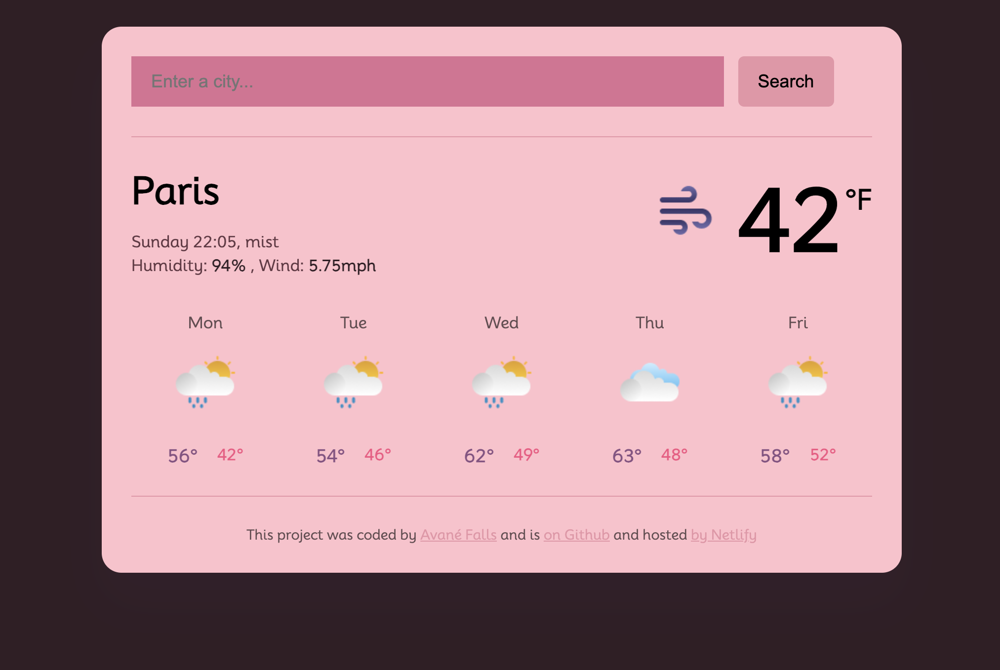

All of my featured projects below

Haiku Generator
"A traditional Japanese haiku is a three-line poem with seventeen syllables, written in a 5/7/5 syllable count. Often focusing on images from nature, haiku emphasizes simplicity, intensity, and directness of expression."
Learn moreMatcha Project
"Made from finely ground young tea leaves, matcha green tea powder is packed with antioxidants. Learn how to turn it into a frothy, nourishing drink at home."
Learn more
